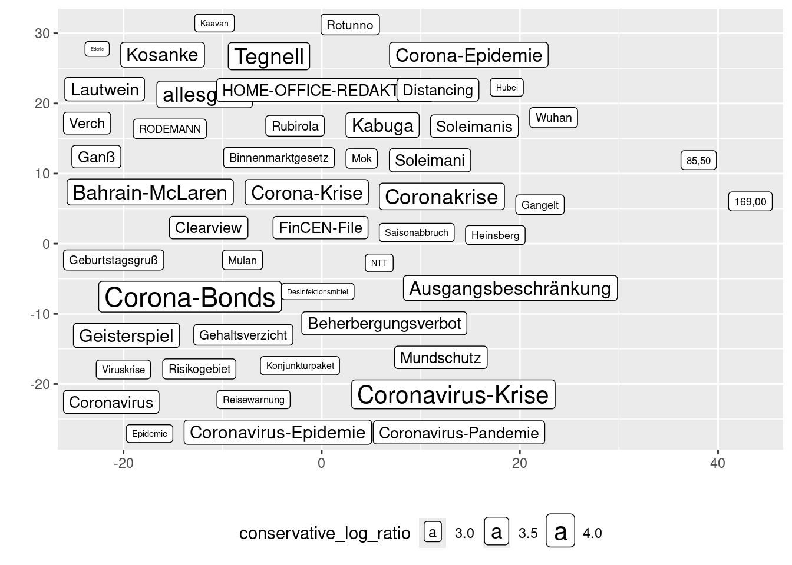
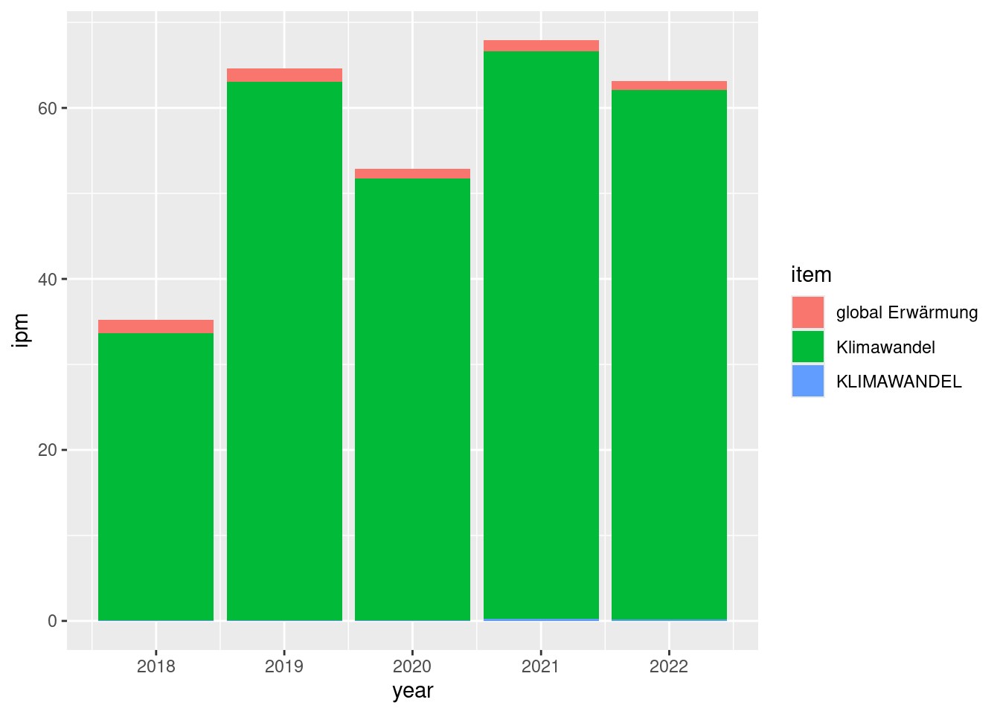
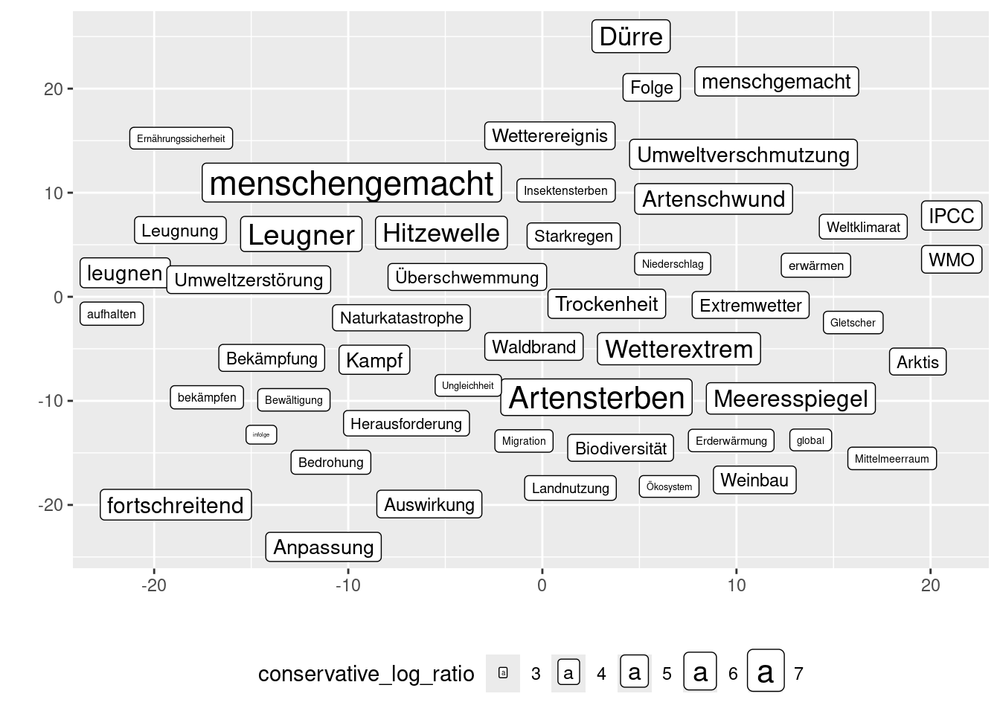
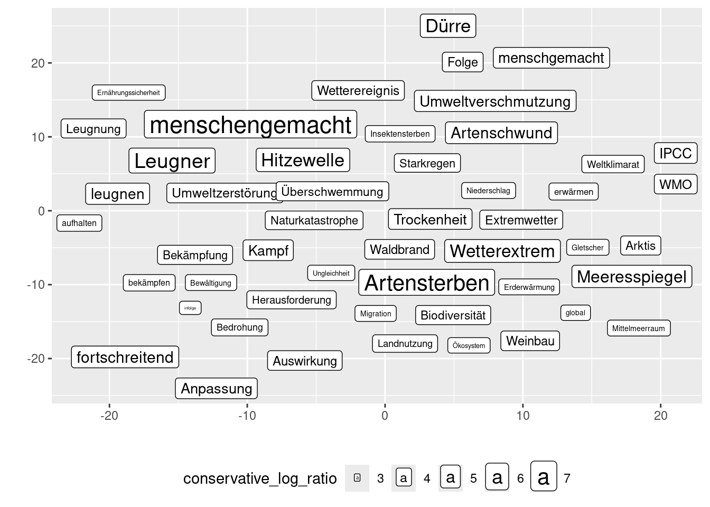
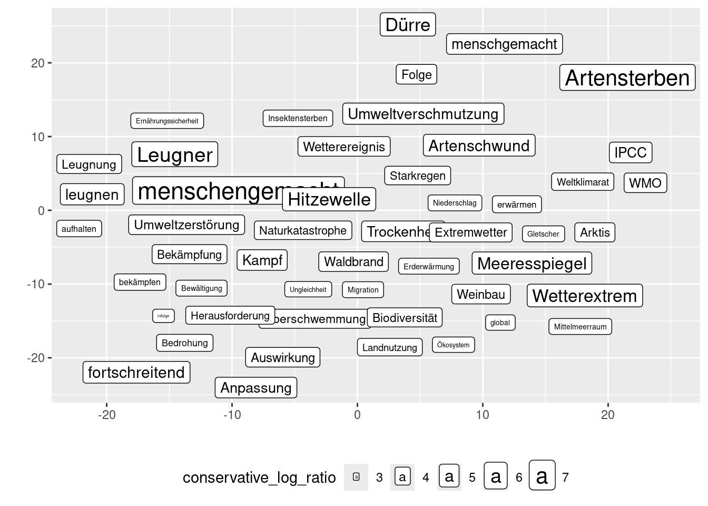

rm(list = ls())
library(tidyverse)
library(httr2)
library(jsonlite)
library(ggrepel)
url_api <- "http://127.0.0.1:5000"cwb-cads functionality
1 Setup
- get API access token via
/user/login
access.token <- str_interp("${url_api}/user/login") |>
request() |>
req_method("POST") |>
req_body_form(password = 'mmda-admin', username = 'admin') |>
req_perform() |>
magrittr::extract2("body") |>
rawToChar() |> fromJSON() |>
magrittr::extract2("access_token")2 Corpora
- corpus access via
/corpus/
corpora <- str_interp("${url_api}/corpus/") |>
request() |>
req_auth_bearer_token(access.token) |>
req_perform() |>
magrittr::extract2("body") |>
rawToChar() |> fromJSON() |>
tibble()
corpora- we use
"SZ-2018-2022"as an example here
corpus.id <- corpora |>
filter(cwb_id == "SZ-2018-2022") |>
pull(id)
corpus <- str_interp("${url_api}/corpus/${corpus.id}") |>
request() |>
req_auth_bearer_token(access.token) |>
req_perform() |>
magrittr::extract2("body") |> rawToChar() |> fromJSON() 2.1 Meta Data
- indexed structural (and positional) attributes can be accessed directly at
/corpus/<id>/
corpus |> magrittr::extract2("p_atts")[1] "lemma" "word" "pos" corpus |> magrittr::extract2("s_atts")[1] "s" "p" "text" "corpus" "issue" corpus |> magrittr::extract2("s_annotations") [1] "corpus_name" "issue_day" "text_date"
[4] "text_datum" "text_id" "text_month"
[7] "text_nr_sentences" "text_ressort" "text_rubrik"
[10] "text_seite_end" "text_seite_start" "text_seitentitel"
[13] "text_year" "p_type" s_annotationsbelong tos_atts(as long as the corpus was correctly indexed)- in this context, we refer to the
s_attaslevelwith correspondingkeys (such that meta data is stored inlevel_key) - they are not stored in the database by default
str_interp("${url_api}/corpus/${corpus.id}/meta/") |>
request() |>
req_auth_bearer_token(access.token) |>
req_perform() |>
magrittr::extract2("body") |> rawToChar() |> fromJSON() - we can store meta data from annotated s-attributes (
level_key) using aPUTrequest - we specify the
value_typehere (use"unicode"for categorical data) - this runs idempotently
str_interp("${url_api}/corpus/${corpus.id}/meta/") |>
request() |>
req_method('PUT') |>
req_body_json(list(level = 'text', key = 'year', value_type = 'unicode')) |>
req_auth_bearer_token(access.token) |>
req_perform() |>
magrittr::extract2("body") |> rawToChar() |> fromJSON()$key
[1] "year"
$value_type
[1] "unicode"str_interp("${url_api}/corpus/${corpus.id}/meta/") |>
request() |>
req_auth_bearer_token(access.token) |>
req_perform() |>
magrittr::extract2("body") |> rawToChar() |> fromJSON() |> tibble() |>
magrittr::extract2("annotations") [[1]]
key value_type
1 year unicode- and corresponding frequency counts (only reasonable for categorical data)
str_interp("${url_api}/corpus/${corpus.id}/meta/frequencies") |>
request() |>
req_url_query(level = 'text', key = 'year') |>
req_auth_bearer_token(access.token) |>
req_perform() |>
magrittr::extract2("body") |> rawToChar() |> fromJSON()- if you try to do this without storing the meta data first, you’ll get a
404
str_interp("${url_api}/corpus/${corpus.id}/meta/frequencies") |>
request() |>
req_url_query(level = 'text', key = 'month') |>
req_auth_bearer_token(access.token) |>
req_perform() |>
magrittr::extract2("body") |> rawToChar() |> fromJSON()Error in `req_perform()`:
! HTTP 404 Not Found.2.2 Subcorpora
- we create subcorpora for each year in
"SZ-2018-2022" - we need
level,key, the correspondingvalues_unicode, and thenameof the subcorpus
subcorpora <- str_interp("${url_api}/corpus/${corpus.id}/subcorpus/") |>
request() |>
req_auth_bearer_token(access.token) |>
req_perform() |>
magrittr::extract2("body") |> rawToChar() |> fromJSON()
for (y in 2018:2022){
# we only create the subcorpus if it does not already exist
.subcorpus.exists <- F
if (length(subcorpora) > 0){
if (length(subcorpora |> filter(name == as.character(y), corpus.id == corpus.id)) > 0){
.subcorpus.exists <- T
}
}
if (!.subcorpus.exists){
subcorpus <- str_interp("${url_api}/corpus/${corpus.id}/subcorpus/") |>
request() |>
req_method('PUT') |>
req_body_json(data = list(level = 'text', key = 'year', values_unicode = list(paste0("y", as.character(y))), name = as.character(y))) |>
req_auth_bearer_token(access.token) |>
req_perform() |>
magrittr::extract2("body") |> rawToChar() |> fromJSON()
}
}subcorpora <- str_interp("${url_api}/corpus/${corpus.id}/subcorpus/") |>
request() |>
req_auth_bearer_token(access.token) |>
req_perform() |>
magrittr::extract2("body") |> rawToChar() |> fromJSON()
subcorpora3 Keyword Analysis
- keyword analyses are comparisons between two frequency lists (“target” and “reference”)
- a frequency list can either be compiled from a whole corpus or a subcorpus
- two types of keyword analysis are supported:
- (sub-)corpus 1 vs. (sub-)corpus 2
- subcorpus vs. rest of the corpus
- mode is detected automatically
- i.e. providing a subcorpus as the target and its original corpus as the reference will automatically switch to subcorpus vs. rest (if not suppressed)
3.1 Example: SZ-2018-2022 vs. FAZ-2020-2022
corpus.id <- corpora |> filter(cwb_id == "SZ-2018-2022") |> pull(id)
corpus.id.reference <- corpora |> filter(cwb_id == "FAZ-2020-2022") |> pull(id)3.1.1 Creation
- different positional attributes can be compared to one another (
pandp_reference)- default:
lemma(fallback if not defined in corpus:word)
- default:
kw.id <- request(str_interp("${url_api}/keyword/")) |>
req_body_json(list(corpus_id = corpus.id,
corpus_id_reference = corpus.id.reference)) |>
req_auth_bearer_token(access.token) |>
req_perform() |>
magrittr::extract2("body") |> rawToChar() |> fromJSON() |>
magrittr::extract2("id")3.1.2 Keyword Table
- the result of a keyword analysis is a frequency comparison table of individual
items(i.e.p-types) with corresponding association measures (scores)
kw.table.page <- request(str_interp("${url_api}/keyword/${kw.id}/items")) |>
req_auth_bearer_token(access.token) |>
req_perform() |>
magrittr::extract2("body") |> rawToChar() |> fromJSON()
kw.table.page |>
magrittr::extract2("items") |>
magrittr::extract2("scores") |>
bind_rows(.id = "item") |>
pivot_wider(names_from = measure, values_from = score) |>
mutate(item = kw.table.page |> magrittr::extract2("items") |> magrittr::extract2("item"))- by default, the top
page_size=10items according tosort_by="conservative_log_ratio"are given - you can switch between different association measures and paginate through results
kw.table.page <- request(str_interp("${url_api}/keyword/${kw.id}/items")) |>
req_url_query(sort_by = "log_likelihood", page_size = 20, page_number = 2) |>
req_auth_bearer_token(access.token) |>
req_perform() |>
magrittr::extract2("body") |> rawToChar() |> fromJSON()
kw.table.page |>
magrittr::extract2("items") |>
magrittr::extract2("scores") |>
bind_rows(.id = "item") |>
pivot_wider(names_from = measure, values_from = score) |>
mutate(item = kw.table.page |> magrittr::extract2("items") |> magrittr::extract2("item"))3.2 Example: SZ-2020 vs. SZ-2019
subcorpus.id <- subcorpora |> filter(name == "2020") |> pull(id)
subcorpus.id.reference <- subcorpora |> filter(name == "2019") |> pull(id)3.2.1 Creation
kw.id <- request(str_interp("${url_api}/keyword/")) |>
req_body_json(list(corpus_id = corpus.id,
subcorpus_id = subcorpus.id,
corpus_id_reference = corpus.id.reference,
subcorpus_id_reference = subcorpus.id.reference,
p = 'lemma',
p_reference = 'lemma')) |>
req_auth_bearer_token(access.token) |>
req_perform() |>
magrittr::extract2("body") |> rawToChar() |> fromJSON() |>
magrittr::extract2("id")3.2.2 Keyword Table
kw.items <- request(str_interp("${url_api}/keyword/${kw.id}/items")) |>
req_auth_bearer_token(access.token) |>
req_perform() |>
magrittr::extract2("body") |> rawToChar() |> fromJSON()
kw.items |>
magrittr::extract2("items") |>
magrittr::extract2("scores") |>
bind_rows(.id = "item") |>
pivot_wider(names_from = measure, values_from = score) |>
mutate(item = kw.items |> magrittr::extract2("items") |> magrittr::extract2("item"))3.3 Example: SZ-2020 vs. remainder of SZ-2018-2022
3.3.1 Creation
kw.id <- request(str_interp("${url_api}/keyword/")) |>
req_body_json(list(corpus_id = corpus.id,
subcorpus_id = subcorpus.id,
corpus_id_reference = corpus.id,
p = 'lemma',
p_reference = 'lemma')) |>
req_auth_bearer_token(access.token) |>
req_perform() |>
magrittr::extract2("body") |> rawToChar() |> fromJSON() |>
magrittr::extract2("id")3.3.2 Keyword Table
kw.items <- request(str_interp("${url_api}/keyword/${kw.id}/items")) |>
req_auth_bearer_token(access.token) |>
req_perform() |>
magrittr::extract2("body") |> rawToChar() |> fromJSON() |>
magrittr::extract2("items")
kw.items$scores |>
bind_rows(.id = "item") |>
pivot_wider(names_from = measure, values_from = score) |>
mutate(item = kw.items$item)3.3.3 Concordance Lines
- here: concordances of specific items on the keyword list
- concordances always belong to a query (in this case: a query for the item)
- we create a query using the assisted query endpoint (
/query/assisted/), see below for more details - note that we performed the keyword analysis on the
p="lemma"layer
query <- request(str_interp("${url_api}/query/assisted")) |>
req_body_json(list(p = "lemma", items = list("Corona-Bonds"), corpus_id = corpus.id)) |>
req_auth_bearer_token(access.token) |>
req_perform() |>
magrittr::extract2("body") |> rawToChar() |> fromJSON()
query.id <- query |> magrittr::extract2("id")- access to concordance lines via
/query/<id>/concordance
concordance.lines <- request(str_interp("${url_api}/query/${query.id}/concordance")) |>
req_auth_bearer_token(access.token) |>
req_perform() |>
magrittr::extract2("body") |> rawToChar() |> fromJSON() |>
magrittr::extract2("lines")- by default, all available structural data (as stored in CWB) are returned
concordance.lines |> magrittr::extract2("structural")- only two positional attributes (
primary="word"andsecondary="lemma") are returned - actual concordance lines (as verticalised text) can be found in
tokens
concordance.lines |> magrittr::extract2("tokens") |> magrittr::extract2(2)- by default, you can paginate through random lines via
page_sizeandpage_number, see below for more details on filtering and sorting - note that when working on a subcorpus, the query must be defined on this subcorpus, e.g. in
"SZ-2020":
query <- request(str_interp("${url_api}/query/assisted")) |>
req_body_json(list(p = "lemma", items = list("Corona-Bonds"), corpus_id = corpus.id, subcorpus_id = subcorpus.id, s = "text")) |>
req_auth_bearer_token(access.token) |>
req_perform() |>
magrittr::extract2("body") |> rawToChar() |> fromJSON()
query.id <- query |> magrittr::extract2("id")request(str_interp("${url_api}/query/${query.id}/concordance")) |>
req_auth_bearer_token(access.token) |>
req_url_query(page_size = 1000) |>
req_perform() |>
magrittr::extract2("body") |> rawToChar() |> fromJSON() |>
magrittr::extract2("lines") |>
magrittr::extract2("structural") |>
pull(text_date) |> table()
20200325 20200328 20200330 20200331 20200401 20200402 20200403 20200404
1 1 1 4 5 11 8 16
20200406 20200407 20200408 20200409 20200416 20200417 20200418 20200420
19 7 11 4 3 1 3 4
20200423 20200424 20200427 20200428 20200504 20200505 20200506 20200508
1 4 1 2 1 1 1 3
20200511 20200512 20200513
1 1 1 3.3.4 Visualisation (Semantic Map)
- keyword tables (and collocation tables, see below) are visualised via semantic maps
- semantic map = two-dimensional arrangement using coordinates + size = association measure
- association measures and (initial) coordinates are provided by the API
- semantic maps can e.g. display the top
page_size=200items according to thesort_by="conservative_log_ratio"association measure- in an interactive frontend, the user should be able to set these parameters
- we set
page_size=50here, but a good frontend should make the map zoomable (best case: get more items until a user-defined cut-off)
- coordinates are provided automatically for all items
kw.table.page <- request(str_interp("${url_api}/keyword/${kw.id}/items")) |>
req_url_query(sort_by = "conservative_log_ratio", page_size = 50, page_number = 1) |>
req_auth_bearer_token(access.token) |>
req_perform() |>
magrittr::extract2("body") |> rawToChar() |> fromJSON()
coordinates <- kw.table.page |>
magrittr::extract2("coordinates") |>
tibble()
coordinates- note that two types of coordinates are given:
- initial coordinates as determined by the API
- user coordinates that take precedence if defined via dragging on the semantic map by the user (see below)
scores <- kw.table.page |>
magrittr::extract2("items") |>
magrittr::extract2("scores") |>
bind_rows(.id = "item") |>
pivot_wider(names_from = measure, values_from = score) |>
mutate(item = kw.table.page |> magrittr::extract2("items") |> magrittr::extract2("item"))
map <- scores |>
left_join(coordinates, by = "item") |>
mutate(x = if_else(!is.na(x_user), x_user, x),
y = if_else(!is.na(y_user), y_user, y)) |>
select(item, conservative_log_ratio, x, y)
map |>
filter(conservative_log_ratio > 0) |>
ggplot(aes(x = x, y = y, label = item)) +
geom_label_repel(aes(size = conservative_log_ratio), max.overlaps = Inf, point.size = NA, min.segment.length = Inf) +
xlab("") + ylab("") +
theme(legend.position = "bottom")
- we filter out all items with
conservative_log_ratio <= 0here, which is probably reasonable- at the very least, items with
E11 >= O11should not be displayed - no defaults implemented!
- some reasonable defaults can be proposed though
- best case scenario: user-defined
- at the very least, items with
4 Query
4.1 Creation
- here: CQP query in a (sub-)corpus, i.e. we create a query using the full query end point here
- for assisted mode, see above
query <- str_interp("${url_api}/query/") |>
request() |>
req_body_json(list(corpus_id = corpus.id, cqp_query = '[lemma="Klimawandel"%cd] | [lemma="global"] [lemma="Erwärmung"]')) |>
req_auth_bearer_token(access.token) |>
req_perform() |> magrittr::extract2("body") |> rawToChar() |> fromJSON()
query.id <- query |> magrittr::extract2("id")4.2 Concordancing
concordance.lines <- request(str_interp("${url_api}/query/${query.id}/concordance")) |>
req_auth_bearer_token(access.token) |>
req_perform() |>
magrittr::extract2("body") |> rawToChar() |> fromJSON() |>
magrittr::extract2("lines")concordance.lines |>
magrittr::extract2("tokens") |>
magrittr::extract2(1)4.2.1 Context Settings
- you can provide three parameters to define how much context is displayed (and what should be treated as
out_of_window)window: number of tokens left and right of the matches considered as immediate contextextended_window: maximum number of tokens totally returnedcontext_break: structural attribute to delimit context
request(str_interp("${url_api}/query/${query.id}/concordance")) |>
req_auth_bearer_token(access.token) |>
req_url_query(window = 5, extended_window = 10, context_break = 's') |>
req_perform() |>
magrittr::extract2("body") |> rawToChar() |> fromJSON() |>
magrittr::extract2("lines") |>
magrittr::extract2("tokens") |>
magrittr::extract2(10)4.2.2 Filtering
- we can filter concordance lines according to certain items in the context
- this only takes into consideration items in the immediate context (i.e. where
out_of_window=FALSE)
item = "Erderwärmung"
concordance.lines <- request(str_interp("${url_api}/query/${query.id}/concordance")) |>
req_url_query(filter_item = item, filter_item_p_att = 'lemma', extended_window = 10, context_break = 's') |>
req_auth_bearer_token(access.token) |>
req_perform() |>
magrittr::extract2("body") |> rawToChar() |> fromJSON() |>
magrittr::extract2("lines")concordance.lines |>
magrittr::extract2("tokens") |> magrittr::extract(1)[[1]]
cpos is_filter_item offset out_of_window primary secondary
1 11155951 FALSE -9 FALSE In in
2 11155952 FALSE -8 FALSE Niger Niger
3 11155953 FALSE -7 FALSE und und
4 11155954 FALSE -6 FALSE damit damit
5 11155955 FALSE -5 FALSE mitten mitten
6 11155956 FALSE -4 FALSE in in
7 11155957 FALSE -3 FALSE der der
8 11155958 FALSE -2 FALSE Sahelzone Sahelzone
9 11155959 FALSE -1 FALSE sind sein
10 11155960 FALSE 0 FALSE Klimawandel Klimawandel
11 11155961 FALSE 1 FALSE und und
12 11155962 FALSE 2 FALSE Erderwärmung Erderwärmung
13 11155963 FALSE 3 FALSE in in
14 11155964 FALSE 4 FALSE voller voll
15 11155965 FALSE 5 FALSE Härte Härte
16 11155966 FALSE 6 FALSE zu zu
17 11155967 FALSE 7 FALSE spüren spüren
18 11155968 FALSE 8 FALSE . .4.2.3 Sorting
- by default, the API provides concordances in randomised order
- use
sort_order="first"to sort by corpus occurrence
concordance.lines <- request(str_interp("${url_api}/query/${query.id}/concordance")) |>
req_url_query(sort_order = 'first', page_size = 20) |>
req_auth_bearer_token(access.token) |>
req_perform() |>
magrittr::extract2("body") |> rawToChar() |> fromJSON() |>
magrittr::extract2("lines")concordance.lines |> pull(match_id) [1] 2221 16213 189455 213617 216094 227793 240348 243161 250115 277070
[11] 281021 608097 630500 671652 682625 699292 742615 948260 948478 948857- you can also use
sort_order="ascending"orsort_order="descending" - this has to be combined with
sort_by(p-attribute) andsort_by_offset(relative to match..matchend) - the following request retrieves e.g. concordance lines sorted by lemmata next to the match
concordance.lines <- request(str_interp("${url_api}/query/${query.id}/concordance")) |>
req_url_query(sort_by_offset = 1, sort_by_p_att = 'lemma', sort_order = 'ascending', page_number = 10, page_size = 500) |>
req_auth_bearer_token(access.token) |>
req_perform() |>
magrittr::extract2("body") |> rawToChar() |> fromJSON() |>
magrittr::extract2("lines")lemmata <- c()
for (i in 50:150){
lemma <- concordance.lines |>
magrittr::extract2("tokens") |> magrittr::extract2(i) |>
filter(offset == 1) |> pull(secondary)
lemmata <- c(lemmata, lemma)
}
lemmata [1] "oder" "oder" "oder" "oder"
[5] "offenbar" "offenbaren" "oft" "oft"
[9] "oftmals" "ohne" "ohne" "ohne"
[13] "ohnehin" "ohnehin" "ohnehin" "operieren"
[17] "optimistisch" "passen" "passieren" "passieren"
[21] "pauschal" "pausieren" "peinlich" "persönlich"
[25] "plus" "plus" "plötzlich" "plötzlich"
[29] "politisch" "politisch" "praktisch" "praktisch"
[33] "praktisch" "praktisch" "pressieren" "produzieren"
[37] "profilieren" "profitier" "profitier" "profitier"
[41] "profitier" "profitier" "protestieren" "protestieren"
[45] "protestieren" "protestieren" "provozieren" "prägen"
[49] "prägen" "prägen" "prägen" "prägen"
[53] "prägen" "prägen" "prägen" "präsentieren"
[57] "präzise" "quasi" "radikal" "rasant"
[61] "rasch" "raten" "rausschmeißen" "reagieren"
[65] "reagieren" "reagieren" "reagieren" "reagieren"
[69] "reagieren" "reagieren" "reagieren" "reagieren"
[73] "reagieren" "reagieren" "reagieren" "reagieren"
[77] "reagieren" "reagieren" "real" "real"
[81] "real" "rechnen" "reden" "reden"
[85] "reden" "reden" "reden" "reduzieren"
[89] "reduzieren" "referieren" "relevant" "respektieren"
[93] "retten" "richten" "richten" "richten"
[97] "rücken" "rüsten" "rüsten" "rüsten"
[101] "sagen" 4.3 Breakdown
- breakdown of the query shows which items were found (and their absolute and relative frequency (instances per million (ipm) in the corpus))
breakdown <- request(str_interp("${url_api}/query/${query.id}/breakdown")) |>
req_auth_bearer_token(access.token) |>
req_url_query(p = "lemma") |>
req_perform() |>
magrittr::extract2("body") |> rawToChar() |> fromJSON() |>
magrittr::extract2("items") |>
tibble()breakdown|> select(item, ipm, freq, nr_tokens)- note that nr_tokens (and ipm) is calculated taken the subcorpus size into account (if query is run on subcorpus)
subcorpus.query.id <- str_interp("${url_api}/query/") |>
request() |>
req_body_json(list(corpus_id = corpus.id, subcorpus_id = subcorpus.id, cqp_query = '[lemma="Klimawandel"%cd] | [lemma="global"] [lemma="Erwärmung"]')) |>
req_auth_bearer_token(access.token) |>
req_perform() |> magrittr::extract2("body") |> rawToChar() |> fromJSON() |>
magrittr::extract2("id")
request(str_interp("${url_api}/query/${subcorpus.query.id}/breakdown")) |>
req_auth_bearer_token(access.token) |>
req_url_query(p = "lemma") |>
req_perform() |>
magrittr::extract2("body") |> rawToChar() |> fromJSON() |>
magrittr::extract2("items") |>
tibble() |>
select(item, ipm, freq, nr_tokens)4.4 Meta Distribution
- meta data must be stored in database for this to work (see above)
- meta distribution via annotated (
key) s-attribute (level) with p-attribute breakdown (p)
query.meta <- request(str_interp("${url_api}/query/${query.id}/meta")) |>
req_auth_bearer_token(access.token) |>
req_url_query(level = "text", key = "year", p = "lemma") |>
req_perform() |>
magrittr::extract2("body") |> rawToChar() |> fromJSON()
query.meta- distribution across categorical meta data can be visualised using barplots
query.meta |> mutate(year = lubridate::floor_date(as.Date(value, "y%Y"), "year")) |>
ggplot(aes(x = year, y = ipm, fill = item)) +
geom_col()
visualisation is only reasonable for categorical data
other visualisations possible but not implemented
again, if you try to do this without storing the meta data first, you’ll get a
404
query.meta <- request(str_interp("${url_api}/query/${query.id}/meta")) |>
req_auth_bearer_token(access.token) |>
req_url_query(level = "text", key = "month", p = "lemma") |>
req_perform() |>
magrittr::extract2("body") |> rawToChar() |> fromJSON()Error in `req_perform()`:
! HTTP 404 Not Found.4.5 Collocation
4.5.1 Creation
- collocation analyses are linked to queries (words that appear in the vicinity of the query matches)
collocation <- request(str_interp("${url_api}/query/${query.id}/collocation")) |>
req_auth_bearer_token(access.token) |>
req_url_query(p = "lemma") |>
req_perform() |>
magrittr::extract2("body") |> rawToChar() |> fromJSON()
collocation.id <- collocation |> magrittr::extract2("id")4.5.2 Collocation Table
- cf. keyword table
coll.table.page <- request(str_interp("${url_api}/collocation/${collocation.id}/items")) |>
req_auth_bearer_token(access.token) |>
req_perform() |>
magrittr::extract2("body") |> rawToChar() |> fromJSON()
coll.table.page |>
magrittr::extract2("items") |>
magrittr::extract2("scores") |>
bind_rows(.id = "item") |>
pivot_wider(names_from = measure, values_from = score) |>
mutate(item = coll.table.page |> magrittr::extract2("items") |> magrittr::extract2("item"))4.5.3 Semantic Map
- cf. semantic map in keyword analyses
coll.table.page <- request(str_interp("${url_api}/collocation/${collocation.id}/items")) |>
req_url_query(page_size = 50) |>
req_auth_bearer_token(access.token) |>
req_perform() |>
magrittr::extract2("body") |> rawToChar() |> fromJSON()
scores <- coll.table.page |>
magrittr::extract2("items") |>
magrittr::extract2("scores") |>
bind_rows(.id = "item") |>
pivot_wider(names_from = measure, values_from = score) |>
mutate(item = coll.table.page |> magrittr::extract2("items") |> magrittr::extract2("item"))
coordinates <- coll.table.page |>
magrittr::extract2("coordinates") |>
tibble()
map <- scores |>
left_join(coordinates, by = "item") |>
mutate(x = if_else(!is.na(x_user), x_user, x),
y = if_else(!is.na(y_user), y_user, y)) |>
select(item, conservative_log_ratio, x, y)
map |>
filter(conservative_log_ratio > 0) |>
ggplot(aes(x = x, y = y, label = item)) +
geom_label_repel(aes(size = conservative_log_ratio), max.overlaps = Inf, point.size = NA, min.segment.length = Inf) +
xlab("") + ylab("") +
theme(legend.position = "bottom")
4.5.4 Concordancing
- note that when clicking on an item here, concordance lines have to be filtered according to initial query and the additional filter item
- you can use the additonal filter item as an argument at
/query/<id>/concordance
item = "Artensterben"
concordance.lines <- request(str_interp("${url_api}/query/${query.id}/concordance")) |>
req_url_query(filter_item = item, filter_item_p_att = 'lemma') |>
req_auth_bearer_token(access.token) |>
req_perform() |>
magrittr::extract2("body") |> rawToChar() |> fromJSON() |>
magrittr::extract2("lines")
concordance.lines |>
magrittr::extract2("tokens") |> magrittr::extract2(1)5 Semantic Maps
- semantic maps are a powerful way to visualise semantic profiles (keyword or collocate tables)
- semantic profile = arrangement of items on \(n\)-best list in two-dimensional space
- coordinates are based on automatic dimensionality reduction (t-SNE / UMAP on high-dimensional type embeddings)
- automatically created coordinates do not always reflect the intended view on a semantic profile
- in an interactive setting, users should thus be able to drag items in order to adjust their coordinates
- (dropping items is useful for creating categories, see document about discourseme description)
5.1 Creation
- semantic maps are created by default for all keyword and collocation analyses, i.e. at
GET /query/<query_id>/collocation/POST /keyword/
- you can de-activate this behaviour setting
semantic_map_init=False - this makes sure that all top items of the analysis have coordinates on the newly created map
- if you provide a
semantic_map_id, the API makes sure that all top items have coordinates on the provided map - a combined semantic map based on items of several analyses can also be created using
PUT /semantic-map/
5.2 Interacting with coordinates
- coordinates can be accessed via
GET /semantic-map/<id>/coordinates/
- all items have two sets of coordinates:
- the initial coordinates that are automatically created, and
- user-defined coordinates (which are all
Noneafter directly after creation)
- modifying the user coordinates works via
PUT /semantic-map/<id>/coordinates/
- “deleting” user coordinates means setting them to
None - we take the map of the above collocation analysis as example
semantic_map.id <- collocation$semantic_map_id- directly get the coordinates from the API
coordinates <- request(str_interp("${url_api}/semantic-map/${semantic_map.id}/coordinates/")) |>
req_auth_bearer_token(access.token) |>
req_perform() |>
magrittr::extract2("body") |> rawToChar() |> fromJSON() - analysis scores are linked via items to these coordinates
coll.table.page <- request(str_interp("${url_api}/collocation/${collocation.id}/items")) |>
req_url_query(page_size = 50) |>
req_auth_bearer_token(access.token) |>
req_perform() |>
magrittr::extract2("body") |> rawToChar() |> fromJSON()
scores <- coll.table.page |>
magrittr::extract2("items") |>
magrittr::extract2("scores") |>
bind_rows(.id = "item") |>
pivot_wider(names_from = measure, values_from = score) |>
mutate(item = coll.table.page |> magrittr::extract2("items") |> magrittr::extract2("item"))
map <- scores |>
left_join(coordinates, by = "item") |>
mutate(x = if_else(!is.na(x_user), x_user, x),
y = if_else(!is.na(y_user), y_user, y)) |>
select(item, conservative_log_ratio, x, y)
map |>
filter(conservative_log_ratio > 0) |>
ggplot(aes(x = x, y = y, label = item)) +
geom_label_repel(aes(size = conservative_log_ratio), max.overlaps = Inf, point.size = NA, min.segment.length = Inf) +
xlab("") + ylab("") +
theme(legend.position = "bottom")
- drag items to other positions
coordinates <- request(str_interp("${url_api}/semantic-map/${semantic_map.id}/coordinates/")) |>
req_method('put') |>
req_body_json(list(item = "Artensterben", x_user = 25, y_user = 20)) |>
req_auth_bearer_token(access.token) |>
req_perform() |>
magrittr::extract2("body") |> rawToChar() |> fromJSON()
map <- scores |>
left_join(coordinates, by = "item") |>
mutate(x = if_else(!is.na(x_user), x_user, x),
y = if_else(!is.na(y_user), y_user, y)) |>
select(item, conservative_log_ratio, x, y)
map |>
filter(conservative_log_ratio > 0) |>
ggplot(aes(x = x, y = y, label = item)) +
geom_label_repel(aes(size = conservative_log_ratio), max.overlaps = Inf, point.size = NA, min.segment.length = Inf) +
xlab("") + ylab("") +
theme(legend.position = "bottom")